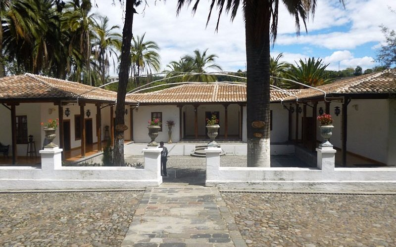
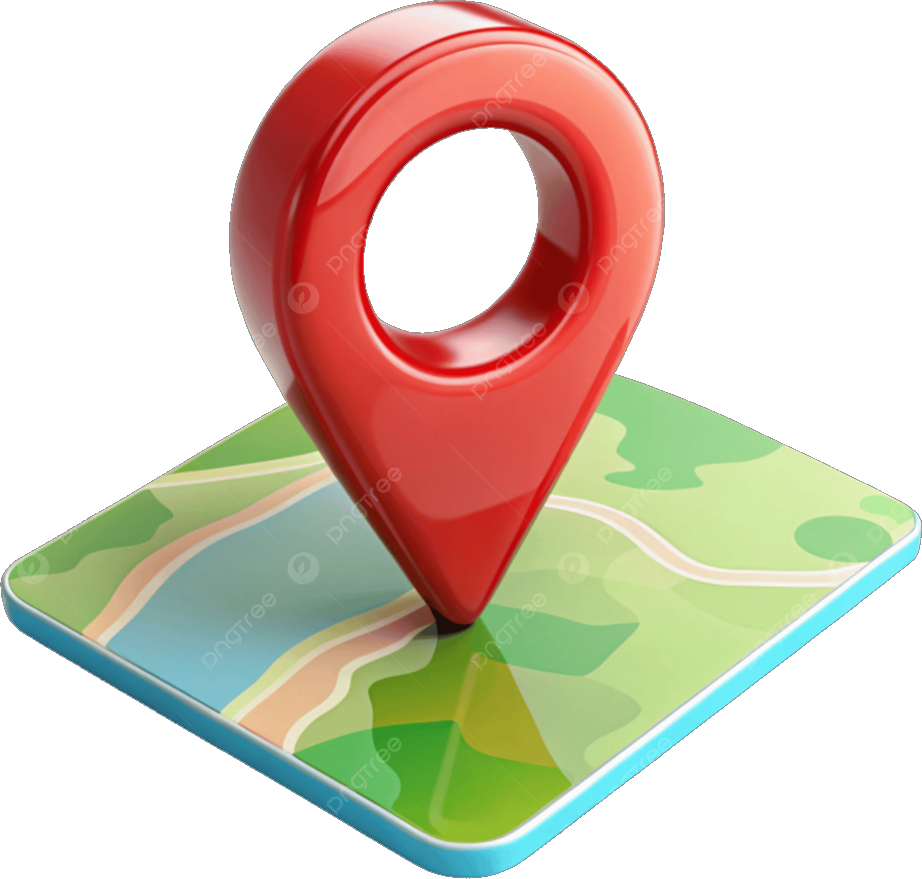

Quinta Juan León Mera
Histórica residencia de época colonial y republicana donde nació la letra del Himno Nacional, inmersa en un oasis botánico eterno.

Ubicación: Av. Los Capulíes, sector Atocha, Ambato.Actividad: Recorridos históricos guiados, fotografía botánica y paseos junto al río Ambato.